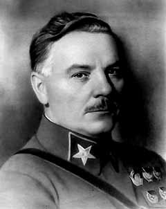

Voroshilov K.E.
Ворошилов Климент Ефремович
Советский военачальник, государственный и партийный деятель, участник Гражданской войны, один из первых Маршалов Советского Союза.
23.01.1881– 02.12.1969
Климент Ворошилов родился в селе Верхнее Екатеринославской губернии (ныне Луганская область, Украина), в семье рабочего-железнодорожника. В 1893–1895 гг. учился в земской школе. С 1896 г. работал на заводах. В 1903 г. вступил в РСДРП, большевик. В 1905 г. председатель Луганского совета рабочих депутатов. В 1906 г. был делегатом IV съезда РСДРП в Стокгольме, где познакомился с В.И. Лениным и И.В. Сталиным. Ворошилов организовал несколько транспортов с оружием из Финляндии, а в Луганске им была создана лаборатория для изготовления бомб. В 1907 г. участвовал в работе V съезда РСДРП в Лондоне, где подружился с М.В. Фрунзе и М.И. Калининым. Неоднократно подвергался арестам, отбывал ссылку. В 1908–1917 гг. вел партийную работу в Баку, Петербурге, Царицыне. С марта 1917 года председатель Луганского совета и городской думы. В ноябре 1917 г. Ворошилов был комиссаром Петроградского военно-революционного комитета. Вместе с Ф.Э. Дзержинским вёл работу по организации Всероссийской Чрезвычайной Комиссии (ВЧК). В начале марта 1918 г. Ворошилов организовал Первый Луганский социалистический отряд, оборонявший город Харьков от немецких войск. В апреле 1918 г. Ворошилов был назначен командующим 5-й Украинской армией. В июле – начале августа 1918 г. командовал группой войск при обороне Царицына, где познакомился и сблизился с И.В. Сталиным. В августе–сентябре 1918 г. член Военного совета Северо-Кавказского военного, в сентябре–октябре 1918 г. член Реввоенсовета (РВС) округа вместе с И. Сталиным и помощник командующего Южного фронта. В октябре–декабре 1918 г. командующий 10-й армией. За время боевых действий Ворошилов показал себя лично храбрым человеком, но некомпетентным в военном деле. Затем был назначен Наркомом внутренних дел Украинской советской республики. Был командующим Харьковским военным округом, командующим 14-й армией и внутренним Украинским фронтом. Один из организаторов и член Реввоенсовета 1-й Конной армии, которой командовал С.М. Будённый. Являлся одним из лидеров «военной оппозиции», осужденной в марте 1919 г. на VIII съезде партии за отказ использовать старых военных специалистов. Ворошилов имел репутацию преданного сторонника Сталина, поддерживал его в борьбе с Троцким. В 1921 г. во главе группы делегатов X съезда РКП(б) участвовал в подавлении Кронштадтского восстания. В 1921–1924 гг. – член Юго-Восточного бюро ЦК РКП(б), командующий войсками Северо-Кавказского военного округа. В 1924–1925 гг. – командующий войсками Московского военного округа и член РВС СССР. После смерти М.В. Фрунзе Ворошилов, как верный и последовательный сторонник Сталина, был назначен им 6 ноября 1925 г. Наркомом по военным и морским делам СССР (в 1934–1940 гг. – Нарком обороны СССР) и председателем РВС СССР. В 1926 г. стал членом Политбюро ЦК партии. В статье «Сталин и Красная Армия» (газета «Правда», 1929 г.) Ворошилов положил начало легенде о Сталине как о главном полководце гражданской войны. В ответ стала твориться легенда о «рабочем-полководце», подкрепленная в 1935 г. присвоением звания Маршала Советского Союза. Ворошилов стал самым прославляемым полководцем Гражданской войны, в честь него слагали песни, называли колхозы, заводы, корабли и т.д. Во время Большого террора Ворошилов в числе других приближённых Сталина участвовал в рассмотрении так называемых «списков» – перечней лиц, репрессированных по личному распоряжению Сталина. Подпись Ворошилова присутствует на 185 списках, по которым были осуждены и расстреляны более 18 000 человек. Как член Политбюро ЦК ВКП(б) утвердил большое количество так называемых «лимитов» (квоты на количество репрессированных). Так, 26 апреля 1938 г. Ворошилов вместе со Сталиным, Молотовым, Кагановичем и Ежовым завизировал утвердительную резолюцию на запросе и.о. секретаря Иркутского обкома ВКП(б) о выделении дополнительного лимита по первой категории на 4 000 человек. Как Народный комиссар обороны Ворошилов принимал активное участие в репрессиях против командного состава РККА. В1940 году Сталин снял его с поста Наркома обороны, после советско-финской войны, когда стало ясно, что Ворошилов абсолютно не может руководить вооруженными силами. Взамен Ворошилов получил посты заместителя председателя Совета народных комиссаров СССР и председателя Комитета обороны при СНК СССР. Во время Великой Отечественной войны член Государственного комитета обороны и Ставки Верховного главнокомандования. 10 июня 1941 г. Сталин назначил Ворошилова главнокомандующим войсками Северо-Западного направления, но уже 31 августа он был отстранен от командования. В сентябре 1941 г. направлен под Ленинград командующим фронтом, потерпел сокрушительное поражение. Сталин немедленно отозвал его и заменил Г.К. Жуковым. В сентябре–ноябре 1942 г. Ворошилов занимал чисто формальный пост главнокомандующего партизанским движением. В январе 1943 г. направлен координировать действия войск Ленинградского и Волховского фронтов при прорыве блокады Ленинграда. Сопровождал Сталина на Тегеранскую конференцию (1943 г.). В 1945–1947 гг. – председатель Союзной контрольной комиссии в Венгрии. В 1946 –1953 гг. – заместитель председателя Совета Министров СССР. После смерти Сталина в марте 1953 г. потерял пост зампреда Совета министров и получил почетную, но маловлиятельную должность председателя Президиума Верховного Совета СССР. В 1956–1957 гг. Ворошилов сблизился с «антипартийной группой» Г.М. Маленкова, Л.М. Кагановича, В.М. Молотова, стремившихся к отказу от принятой Н.С. Хрущевым политики по десталинизации страны. Поддержал их на заседании Президиума ЦК, когда большинство его членов выступили против Хрущева. Однако, когда на Пленуме ЦК (июнь 1957 г.) поражение «группы» стало очевидным, Ворошилов в своем выступлении покаялся, признал ошибки и осудил фракционеров. Хрущев и его окружение решили не трогать Ворошилова, как пользовавшегося широкой известностью героя Гражданской войны. В мае 1960 г. он «по состоянию здоровья» снят с поста, в июле выведен из состава Президиума ЦК, а в октябре 1961 г. уже не избран членом ЦК КПСС. Правда, его оставили членом Президиума Верховного Совета СССР. После прихода к власти Л.И. Брежнева и начала скрытой реабилитации Сталина Ворошилов в 1966 г. вновь стал членом ЦК КПСС. Умер в Москве в 1969 году. Похоронен на Красной площади у Кремлёвской стены.
| Vaneyev A.A.< Prev | Next >Vyshinsky A.Ya. |
|---|